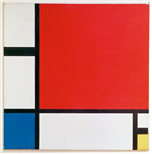

사람들은 대부분 미술 감상을 전문적인 식견을 가진 사람들만이 하는 고상한 취미 활동이라고 생각한다. 그러나 영화를 감상하는 데 지식이 없어도 되듯이, 미술을 감상하기 위해서도 특별한 지식을 갖추지 않아도 된다. 감상이란 마음에서 느껴 일어나는 생각이다. 자연을 감상하듯 편안하게, ㉠ (으)로 미술 작품을 바라본다면 느낌이 자연스럽게 떠오를 것이다.
미술 감상은 순간적인 시각적 판단에서 시작된다. 우선 눈으로 보기에 ‘좋다’ 또는 ‘그렇지 않다’가 평가의 기준이 된다. 눈으로 보아 순간적으로 일어나는 감정이 미술 감상의 가장 기본적인 요소라고 할 수 있다.

이제 20세기 추상 화가 몬드리안이 그린 ‘구성’을 감상해 보자.
이 그림을 보면 왠지 엄격하고 고지식하며 정연한 느낌이 든다. 반듯반듯한 것이 작은 일탈도 허용하지 않을 것 같다. 이런 느낌은 이 그림이 가진 시각적․조형적 특질에서 비롯된 것이며 누구나 쉽게 느끼는 부분이다.
몬드리안의 추상화는 매우 단순하다. 그 단순함은 흰색의 여백, 검은색의 수평선과 수직선, 빨강․파랑․노랑 삼원색을 통해 엄격하고 분명하게 표현돼 있다. 그림에 비뚤어진 사선 하나, 원색을 섞어 만든 이차색 하나 없는 것을 ㉡볼때, 근원적인 것만을 남기겠다는 의지를 느낄 수 있다. 그래서 우리는 이 그림에서 본원적인 질서와 규범을 향한 종교적․구도자적 엄숙성 같은 것을 느끼게 된다.
몬드리안이 어떻게 수평선과 수직선, 빨강․파랑․노랑의 삼원색과 흑백의 무채색만으로 그림을 그리게 됐는지는 그의 ‘나무’ 연작을 통해 잘 드러난다. 우뚝 선 한 그루의 나무가 갈수록 단순화되면서 나무의 줄기와 가지는 점점 선으로 변해버리고 가지 사이의 공간은 평면으로 전환된다. 마침내 그 나무는 오로지 수평선과 수직선, 그리고 그것이 교차하면서 생긴 사각형만 남게 된다. 이런 식으로 ‘나무’ 연작에 표현된 극단화된 단순 구성은 아무리 복잡한 사물도 그 근원은 하나임을 느끼게 한다.
몬드리안의 작품을 감상하기 위해서 몬드리안에 대한 모든 것을 알 필요는 없다. 관심을 가지고 작품을 본다면 시대적 배경을 모른다 해도 그림에 드러난 가장 단순한 조형 언어를 통해 세계의 본원적 질서를 뚜렷이 느낄 수 있다.
(문1) ㉠에 들어갈 알맞은 말을 고르시오.
① 작은 일탈
② 열린 시선
③ 고상한 취미
④ 전문적인 식견
⑤ 시대적 배경에 대한 이해
(문2) <보기>의 관점에서 이 글을 비판할 때, 가장 적절한 것은?
① 작품에 반영된 작가의 생각은 종교적인 시각으로 보면 안 된다.
② 작품을 이해하기 위해서 작가에 관한 모든 것을 알 필요는 없다.
③ 작품을 감상할 때는 편안하게 자연을 감상하듯 바라보아야 한다.
④ 작품을 바라보는 사람들은 모두 같은 생각으로 감상하지 않는다.
⑤ 작품과 관련한 여러 지식을 알아야 작품을 제대로 감상할 수 있다.
(정답)⑤
(해설) <보기>는 미술 작품을 제대로 감상하기 위해서 작가나 작품과 관련된 여러 지식을 알아야 한다고 말하는 것이다. 이 관점에 따르면 이 글에서 말하고 있는 개인의 느낌 위주의 감상만으로는 작품의 진정한 주제에 도달할 수 없다.
(문3) ㉡과 유사한 의미로 쓰인 것은?
① 그는 수학 시험을 잘 보았다.
② 회사에서 경리 사무를 보았다.
③ 그는 이번 투자에 이득을 보았다.
④ 나는 우는 아이를 하루 종일 보았다.
⑤ 오늘 결정은 여러 모로 보고 판단한 결과이다.
(정답)⑤
(해설) ㉡‘볼’은 ‘대상의 내용이나 상태를 알기 위해 살필’의 뜻을 지닌다. ⑤‘오늘 결정은 여러 모로 보고 판단한 결과이다.’의 ‘보고’도 ‘알려고 두루 살피고’의 뜻으로 쓰였다. ① 시험을 치렀다. ② 어떤 일을 맡아서 처리했다. ③ 어떤 일을 당하거나 겪거나 얻어 가지다. ④ 맡아서 보살피거나 지키다.
(정답)②
(해설) 1문단에서 미술 작품을 감상할 때 열린 시선으로 바라본다면 느낌이 자연스럽게 떠오를 것이라고 하였다.